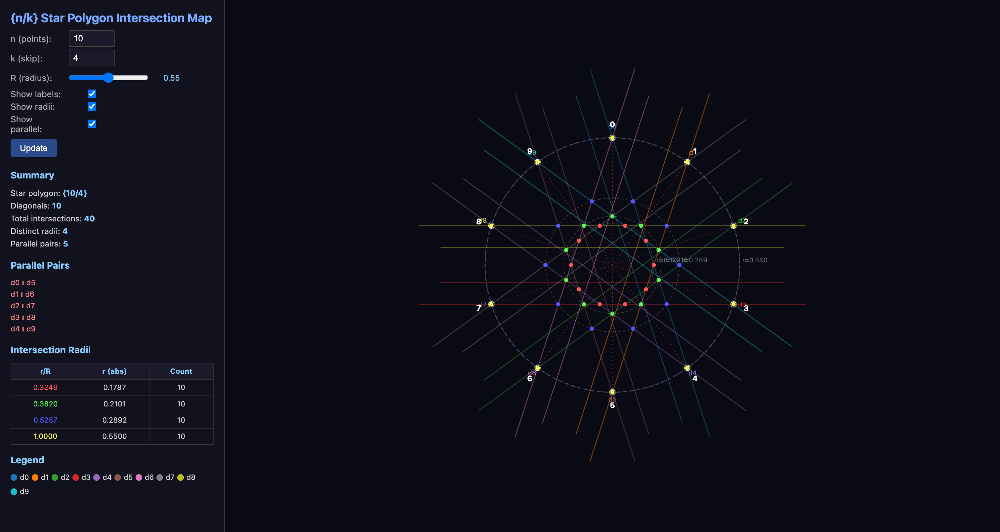
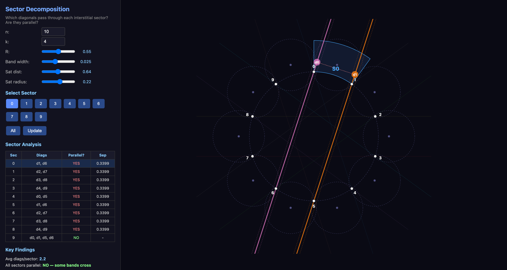
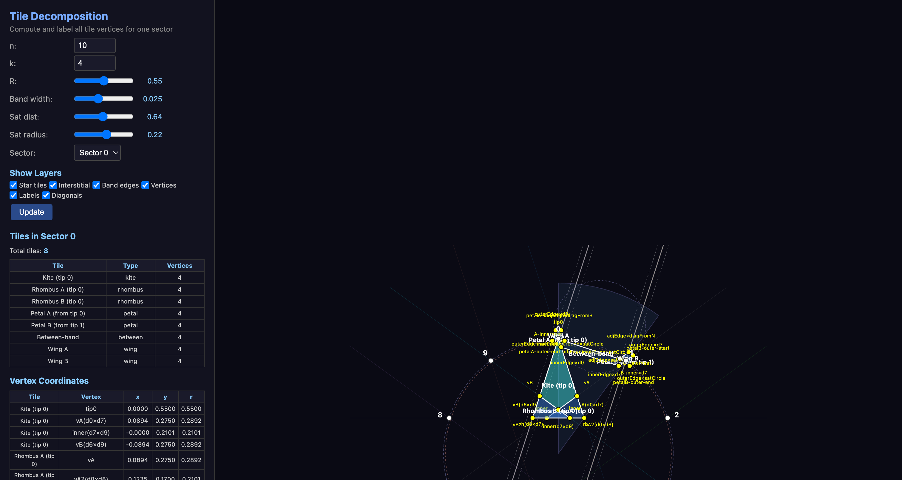
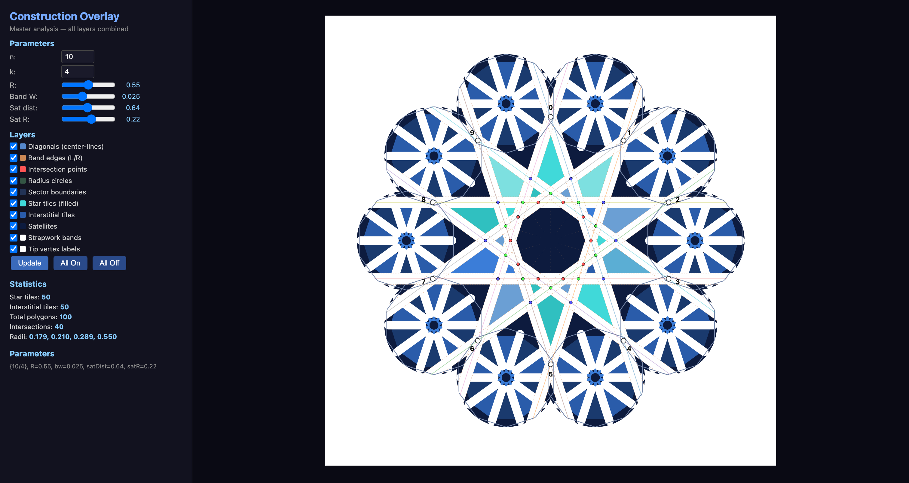

Interactive D3.js visualization tools for decomposing and understanding Islamic geometric patterns. Each tool reveals a different layer of the pattern's mathematical structure.

40 total intersections lie on exactly 4 concentric radii. 5 parallel pairs exist (diag i and diag i+5), meaning these pairs create NO intersections in the interstitial zone.
| Param | Default | Description |
|---|---|---|
n | 10 | Number of star tips |
k | 4 | Star polygon skip |
R | 0.55 | Star outer radius |

ALL 10 sectors have parallel diagonal pairs (separation ~0.34). Face decomposition cannot find interstitial tiles here — must use per-sector explicit tile construction (Strategy 9) instead.
| Param | Default | Description |
|---|---|---|
bandWidth | 0.025 | Half-width of strapwork bands |
satDist | 0.64 | Satellite center distance |
satR | 0.22 | Satellite radius |
sector | 0 | Comma-separated sector indices |

8 distinct tiles per sector: Kite, Rhombus A/B (star zone), Petal A/B, Between-band, Wing A/B (interstitial zone). Star tiles use diagonal intersection points; interstitial tiles use line-circle intersections.
| Param | Default | Description |
|---|---|---|
sector | 0 | Which sector to analyze (0 to n-1) |

Toggle layers on/off to see how construction lines create the tile pattern. Adjust sliders to explore how parameter changes affect the geometry in real time.
| Control | Type | Description |
|---|---|---|
| R slider | Range | Star outer radius (0.2 – 0.9) |
| Band W slider | Range | Band half-width (0.005 – 0.06) |
| Layer checkboxes | Toggle | Show/hide each construction layer |
| All On / All Off | Buttons | Quick layer management |
Use these tools before the first iteration of any new pattern session
Identify all diagonal intersections, concentric radii, and parallel pairs
Determine if bands cross or run parallel in each interstitial gap
Compute exact tile vertices and identify all shapes per sector
Confirm full pattern with all layers toggled, isolate problem areas